用户界面
从根本上说，Visual Studio Code 是一个代码编辑器。与许多其他代码编辑器一样，VS Code 采用了通用的用户界面和布局：左侧是资源管理器，显示你可以访问的所有文件和文件夹；右侧是编辑器，显示你已打开的文件的内容。
动手实践教程，在 VS Code 中使用 AI 构建你的第一个应用。
在我们的介绍视频中了解 Visual Studio Code 的关键功能。
基本布局
VS Code 采用简单直观的布局，最大化编辑器的可用空间，同时留出充足的空间来浏览和访问文件夹或项目的完整上下文。用户界面分为六个主要区域：
- 编辑器 - 编辑文件的主要区域。你可以垂直和水平并排打开任意数量的编辑器。
- 主侧边栏 - 包含不同的视图，如资源管理器，帮助你处理项目。
- 辅助侧边栏 - 位于主侧边栏对面。默认包含聊天视图。将视图从主侧边栏拖放到辅助侧边栏即可移动它们。
- 状态栏 - 关于已打开项目和正在编辑的文件的信息。
- 活动栏 - 位于最左侧。让你在视图之间切换，并提供额外的上下文相关指示器，例如启用 Git 时的传出更改数量。你可以更改活动栏的位置。
- 面板 - 编辑器区域下方用于视图的额外空间。默认包含输出、调试信息、错误和警告以及集成终端。面板也可以移动到左侧或右侧以获得更多垂直空间。

每次启动 VS Code 时，它都会以上次关闭时的状态打开。文件夹、布局和已打开的文件都会保留。
每个编辑器中打开的文件会以选项卡标题（标签页）的形式显示在编辑器区域顶部。要了解有关选项卡标题的更多信息，请参阅标签页部分。
[!TIP]
你可以通过右键单击活动栏并选择将主侧边栏移到右侧来将主侧边栏移到右侧，或切换其可见性 (kb(workbench.action.toggleSidebarVisibility))。
了解有关使用主侧边栏和辅助侧边栏的更多信息。
并排编辑
你可以垂直和水平并排打开任意数量的编辑器。如果已有一个编辑器打开，有多种方式可以在旁边打开另一个编辑器：
- 按住
kbstyle(Alt)并在资源管理器视图中选择文件。 - 按
kb(workbench.action.splitEditor)将活动编辑器拆分为两个。 - 从文件的资源管理器上下文菜单中选择在侧边打开 (
kb(explorer.openToSide))。 - 选择编辑器右上角的拆分编辑器按钮。
- 将文件拖放到编辑器区域的任意一侧。拖放时按住
kbstyle(Ctrl)（macOS 上为kbstyle(Option)）可复制标签页而不是移动它。 - 在快速打开 (
kb(workbench.action.quickOpen)) 文件列表中按kb(explorer.openToSide)。
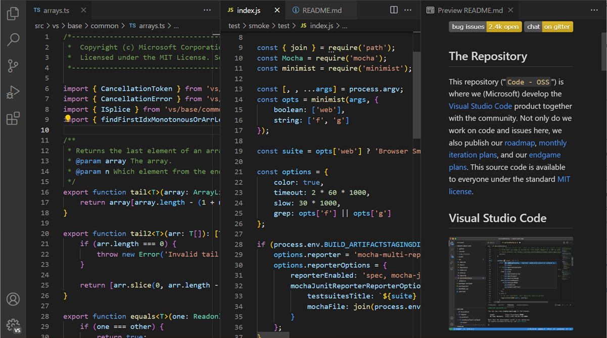
当你打开另一个文件时，活动编辑器将显示该文件的内容。如果你有两个并排的编辑器，并希望在右侧编辑器中打开文件 'foo.cs'，请确保该编辑器是活动的（通过单击其内部），然后再打开文件 'foo.cs'。
默认情况下，编辑器在活动编辑器的右侧打开。你可以通过 setting(workbench.editor.openSideBySideDirection) 设置更改此行为，使新编辑器改为在活动编辑器的下方打开。
当你打开多个编辑器时，可以通过按住 kbstyle(Ctrl) 键（macOS 上为 kbstyle(Cmd) 键）并按 kbstyle(1)、kbstyle(2) 或 kbstyle(3) 来快速切换。
[!TIP]
你可以调整编辑器大小并重新排序。拖放编辑器标题区域来重新定位或调整编辑器大小。
编辑器组
当你拆分编辑器时（使用拆分编辑器或在侧边打开命令），会创建一个新的编辑器区域（编辑组），其中可以容纳一组项目。你可以垂直和水平并排打开任意数量的编辑器组。
你可以在资源管理器视图顶部的打开的编辑器部分清楚地看到这些组（在资源管理器视图中切换 ... > 打开的编辑器）。

你可以在工作台上拖放编辑器组，在组之间移动单个标签页，并快速关闭整个组（全部关闭）。
[!NOTE]
无论是否启用了标签页，VS Code 都使用编辑器组。没有标签页时，编辑器组是你打开项目的堆栈，最近选择的项目在编辑器窗格中可见。
组内拆分
你可以使用视图：在组中拆分编辑器命令 (kb(workbench.action.splitEditorInGroup)) 拆分当前编辑器而无需创建新的编辑器组。要了解有关此编辑器模式以及用于在两侧之间导航的特定命令的更多信息，可以阅读自定义布局文章中的相关部分。
浮动窗口
你可以将编辑器、终端或特定视图移动到它们自己的浮动窗口中。如果你有多显示器设置，并希望在另一个显示器上保持文件打开，这将非常有用。

将编辑器标签页拖出当前 VS Code 窗口即可在浮动窗口中打开它。或者，使用编辑器标签页上下文菜单中的移入新窗口或复制到新窗口选项。
要将浮动窗口固定在屏幕顶部，请从其标题栏中选择设置始终置顶选项（图钉图标）。
要了解有关浮动窗口的更多信息，请阅读自定义布局文章中的相关部分。
模态编辑器
VS Code 中的某些配置编辑器会在编辑器区域上以居中模态叠加层的形式打开，而不是作为常规的编辑器标签页。这些模态编辑器包括：
- 设置编辑器
- 键盘快捷方式编辑器
- 配置文件编辑器
- 工作区信任编辑器
- 语言模型编辑器
- 扩展编辑器
你可以通过单击模态编辑器外部、按 kbstyle(Escape) 或选择关闭按钮来关闭它。你还可以将其最大化以填满编辑器区域，或将其移回主窗口作为常规编辑器标签页。
[!NOTE]
你可以通过setting(workbench.editor.useModal)设置控制此行为。将其设置为off以始终将编辑器作为常规标签页打开，设置为some以仅将配置编辑器作为模态叠加层打开（默认），或设置为all以将所有编辑器在模态叠加层中打开。
迷你地图
迷你地图（代码概览）提供源代码的高级概览，有助于快速导航和代码理解。文件的迷你地图显示在编辑器的右侧。你可以选择或拖动阴影区域来快速跳转到文件中的不同部分。
如果编辑器中有折叠标记，例如 //#region 注释，则迷你地图会显示折叠标记名称。折叠标记因语言而异，请检查适用于你所用语言的标记。

[!TIP]
你可以将迷你地图移到左侧或完全禁用它，方法是在用户或工作区设置中分别设置"editor.minimap.side": "left"或"editor.minimap.enabled": false。
粘性滚动
粘性滚动在编辑器顶部显示当前可见嵌套范围的起始行。它通过指示你在文件中的位置来帮助你导航，并让你快速跳回当前范围的顶部。
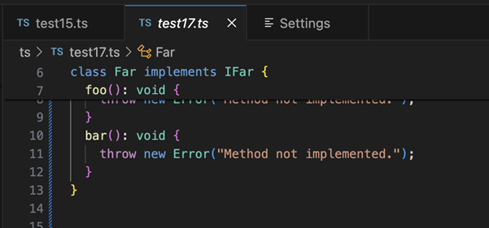
[!TIP]
你可以使用 setting(editor.stickyScroll.enabled) 设置启用/禁用粘性滚动。
粘性滚动使用多种不同的内容模型来创建其标题。你可以选择大纲提供程序模型、折叠提供程序模型和缩进模型来确定在粘性滚动区域中显示哪些行。如果当前语言没有可用的模型，VS Code 会按以上顺序回退到下一个模型。初始使用的默认模型来自 setting(editor.stickyScroll.defaultModel) 设置。
缩进参考线
编辑器显示缩进参考线（垂直线），帮助你快速看到匹配的缩进级别。如果你想禁用缩进参考线，可以在用户或工作区设置中将 setting(editor.guides.indentation) 设置为 false。
面包屑导航
编辑器顶部有一个导航栏，也称为面包屑导航)。面包屑导航始终显示文件路径，如果当前文件类型支持符号，还会显示到光标位置的符号路径。面包屑导航使你能够在文件夹、文件和符号之间快速导航。

你可以通过视图 > 外观 > 切换面包屑导航菜单项或视图：切换面包屑导航命令来禁用面包屑导航。有关面包屑导航功能的更多信息，例如如何自定义其外观，请参阅代码导航文章中的面包屑导航部分。
资源管理器视图
资源管理器视图用于浏览、打开和管理项目中的文件和文件夹。VS Code 基于文件和文件夹工作，你可以通过在 VS Code 中打开文件或文件夹立即开始使用。
在 VS Code 中打开文件夹后，文件夹的内容会显示在资源管理器视图中。你可以从这里执行许多操作：
- 创建、删除和重命名文件和文件夹。
- 通过拖放移动文件和文件夹。
- 使用上下文菜单探索所有选项。
[!TIP]
你可以将文件从 VS Code 外部拖放到资源管理器视图中以复制它们。如果资源管理器为空，VS Code 会改为打开这些文件。你也可以将文件从 VS Code 外部复制粘贴到资源管理器视图中。使用
setting(explorer.autoOpenDroppedFile)设置，你可以配置是否自动打开文件。
VS Code 与你可能使用的其他工具配合良好，尤其是命令行工具。如果你想在 VS Code 当前打开的文件夹上下文中运行命令行工具，请右键单击该文件夹并选择在集成终端中打开。
你还可以通过在文件或文件夹上右键单击并选择在文件资源管理器中显示（Windows）、在 Finder 中显示（macOS）或打开包含文件夹（Linux），在本机操作系统文件资源管理器中导航到文件或文件夹的位置。
[!TIP]
输入 kb(workbench.action.quickOpen)（快速打开）可以通过名称快速搜索和打开文件。
默认情况下，VS Code 会排除某些文件夹不在资源管理器视图中显示，例如 .git。使用 setting(files.exclude) 设置来配置从资源管理器视图中隐藏文件和文件夹的规则。此设置中的 glob 模式遵循操作系统的区分大小写规则（Windows/macOS 上不区分大小写，Linux 上区分大小写）。了解有关 glob 模式的更多信息。
你还可以通过启用 setting(explorer.excludeGitIgnore) 设置来隐藏 .gitignore 文件中指定的文件和文件夹。启用后，.gitignore 模式在 Windows 和 macOS 上以不区分大小写的方式匹配，在 Linux 上以区分大小写的方式匹配。例如，.gitignore 中的 node_modules 模式在 Windows 和 macOS 上将匹配 node_modules/、Node_Modules/、NODE_MODULES/ 和其他大小写变体，但在 Linux 上仅匹配精确的大小写。
启用 setting(imageCarousel.explorerContextMenu.enabled) _（实验性）_ 后，你可以在资源管理器中右键单击图片或视频文件或文件夹，并选择在轮播中打开图片，以在专用的轮播视图中浏览媒体文件。这同样适用于多选操作。
[!TIP]
你可以隐藏派生资源文件，例如 Unity 中的.meta，或 TypeScript 项目中的.js。对于 Unity，要排除.cs.meta文件，可以选择以下模式："/.cs.meta": true。对于 TypeScript，你可以使用以下方式排除 TypeScript 文件生成的 JavaScript："/*.js": {"when": "$(basename).ts"}。
多选
你可以在资源管理器视图和"打开的编辑器"部分中选择多个文件，以便对多个项目执行操作（删除、拖放或在侧边打开）。按住 kbstyle(Ctrl)（macOS 上为 kbstyle(Cmd)）并选择单个文件，或按住 kbstyle(Shift) 选择一系列文件。如果选择了两个项目，你还可以使用上下文菜单中的比较选定项命令来快速比较两个文件。
[!NOTE]
在早期的 VS Code 版本中，按住kbstyle(Ctrl)（macOS 上为kbstyle(Cmd)）键单击会在旁边的新编辑器组中打开文件。如果你仍想要此行为，可以使用setting(workbench.list.multiSelectModifier)设置将多选更改为使用kbstyle(Alt)键。
"workbench.list.multiSelectModifier": "alt"高级树形导航
你可以筛选资源管理器视图中的文件和文件夹。将焦点放在资源管理器视图上，按 kb(list.find) 打开查找控件，然后输入要匹配的文件或文件夹名称的一部分。此导航功能适用于 VS Code 中的所有树形视图。
按筛选按钮可在两种模式之间切换：高亮显示和筛选。按 kbstyle(Down) 可以聚焦第一个匹配的元素并导航到后续匹配的元素。在高亮显示模式下，文件夹上会显示标记，指示它们包含匹配的文件。
按模糊匹配按钮可在精确匹配和模糊匹配之间切换，在模糊匹配模式下，你可以输入字符序列来匹配文件或文件夹名称的任何部分。
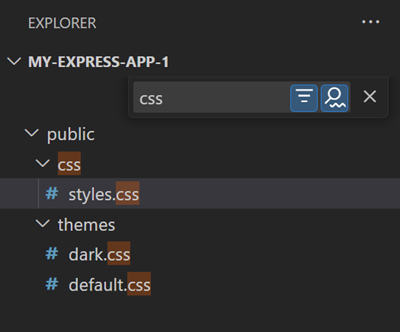
大纲视图
大纲视图是资源管理器视图底部的一个单独部分。展开后，它显示当前活动编辑器的符号树。
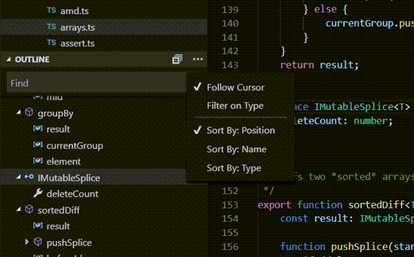
大纲视图具有不同的排序方式模式、可选的光标跟踪，并支持常用的打开手势。它还包括一个用于查找或筛选的输入框。错误和警告也会在大纲视图中显示，让你一目了然地看到问题的位置。
对于符号，该视图依赖于已安装的扩展为不同文件类型计算的信息。例如，内置的 Markdown 支持返回 Markdown 文件符号的 Markdown 标题层次结构。
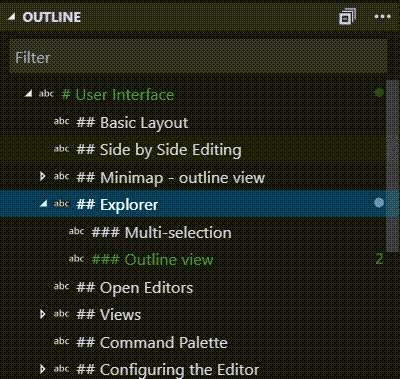
大纲视图有几个设置。搜索以 outline. 开头的设置来配置大纲视图中显示的信息。
时间线视图
时间线视图位于文件资源管理器底部，是一个用于可视化文件事件历史的统一视图。例如，你可以在时间线视图中查看 Git 提交或本地文件保存。
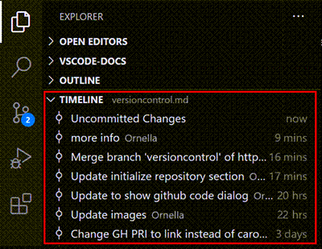
时间线视图工具栏中的筛选操作使你能够在源代码管理事件和本地文件事件之间进行筛选：
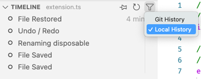
本地文件历史记录
根据你的设置，每次保存编辑器时，都会向列表中添加一个新条目。每个本地历史条目包含条目创建时文件的完整内容，并且在某些情况下，可以提供更多的语义信息（例如，指示重构）。
从条目中，你可以：
- 将更改与本地文件或上一个条目进行比较。
- 还原内容。
- 删除或重命名条目。
[!TIP]
如果你不小心删除了一个文件，可以通过在时间线视图中使用 ... > 本地历史记录：查找要还原的条目操作从本地历史记录中还原它，然后从快速选择中选择你的文件。
你可以配置以下设置来处理本地历史记录：
setting(workbench.localHistory.enabled)- 启用或禁用本地历史记录（默认：true）setting(workbench.localHistory.maxFileSize)- 创建本地历史记录条目时的文件大小限制（默认：256 KB）setting(workbench.localHistory.maxFileEntries)- 每个文件的本地历史记录条目限制（默认：50）setting(workbench.localHistory.exclude)- 用于从本地历史记录中排除特定文件的 glob 模式setting(workbench.localHistory.mergeWindow)- 在此时间间隔（秒）内，进一步的更改将添加到本地文件历史记录中的最后一个条目（默认：10 秒）提交历史记录
VS Code 的内置 Git 支持提供指定文件的 Git 提交历史记录。选择一个提交会打开该提交引入的更改的比较视图。右键单击提交时，你会看到复制提交 ID 和复制提交消息选项。
右键单击历史记录中的提交时，你可以：
- 打开更改 - 打开文件中更改的比较视图。
- 查看提交 - 打开多个文件的比较视图，查看提交中所有文件的更改。
- 选择以进行比较 - 选择一个条目与另一个条目进行比较。
- 复制提交 ID - 将提交 ID 复制到剪贴板。
- 复制提交消息 - 将提交消息复制到剪贴板。
你可以配置此设置来处理 Git 历史记录：
setting(git.timeline.date)- 显示文件提交的提交日期或创作日期视图
资源管理器视图只是 VS Code 中可用的视图之一。还有其他视图用于：
- 搜索 - 提供跨打开文件夹的全局搜索和替换。
- 源代码管理 - VS Code 默认包含 Git 源代码管理。
- 运行 - VS Code 的运行和调试视图显示变量、调用堆栈和断点。
- 扩展 - 在 VS Code 中安装和管理你的扩展。
- 自定义视图 - 由扩展提供的视图。
[!TIP]
你可以使用视图：打开视图命令打开任何视图。
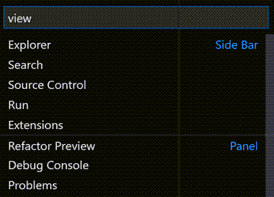
你可以通过右键单击活动栏来显示或隐藏视图，并使用拖放重新排序它们。在资源管理器视图中，你可以通过"..."菜单显示或隐藏各个部分，或拖放各个部分以重新排序。
命令面板
VS Code 同样可以通过键盘轻松访问。最重要的组合键是 kb(workbench.action.showCommands)，它可以调出命令面板。从这里，你可以访问 VS Code 中的所有功能，包括最常用操作的键盘快捷方式。
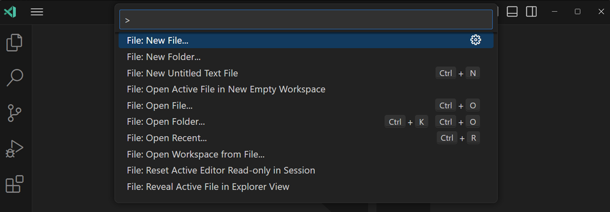
命令面板提供对许多命令的访问。你可以运行编辑器命令、打开文件、搜索符号以及查看文件的快速大纲，所有这些都使用同一个交互式窗口。以下是一些提示：
kb(workbench.action.quickOpen)使你能够通过输入名称导航到任何文件或符号kb(workbench.action.quickOpenPreviousRecentlyUsedEditorInGroup)在最近打开的一组文件中循环切换kb(workbench.action.showCommands)直接进入编辑器命令kb(workbench.action.gotoSymbol)使你能够导航到文件中的特定符号kb(workbench.action.gotoLine)使你能够导航到文件中的特定行
在输入字段中输入 ? 以获取可从命令面板运行的可用命令列表。
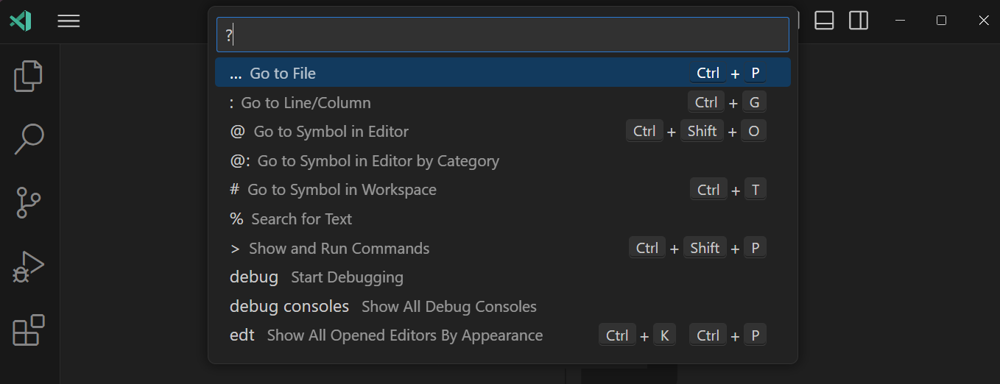
[!TIP]
你可以通过用鼠标光标抓住命令面板的顶部边缘并将其拖到其他位置来移动它。你还可以选择标题栏中的自定义布局控件，然后选择一个预配置的快速输入位置。
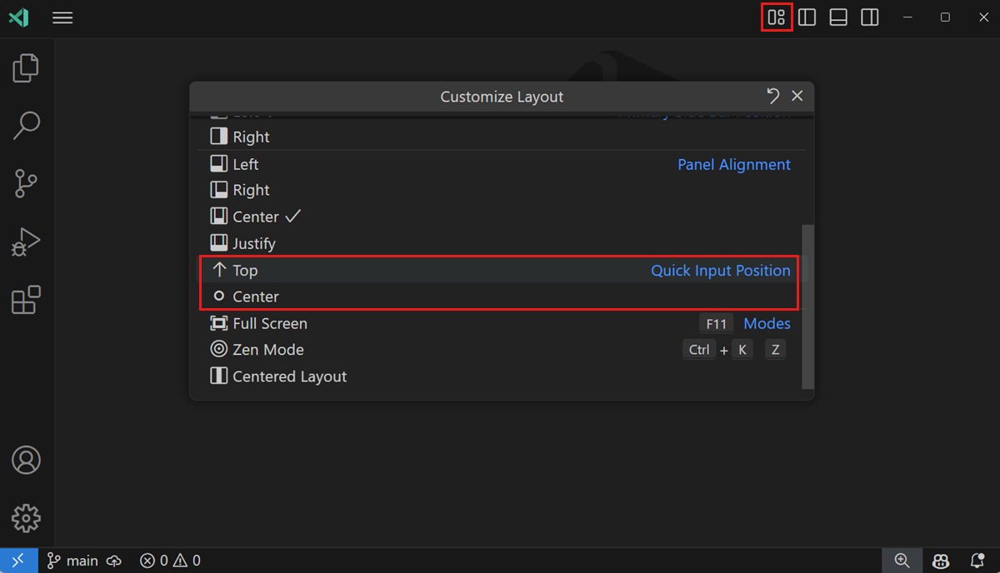
配置编辑器
VS Code 为你提供了许多配置编辑器的选项。从视图 > 外观菜单中，你可以隐藏或切换用户界面的各个部分，例如侧边栏、状态栏和活动栏。
隐藏菜单栏（Windows、Linux）
你可以通过将设置 setting(window.menuBarVisibility) 从 classic 更改为 toggle 或 hidden 来在 Windows 和 Linux 上隐藏菜单栏。设置为 toggle 意味着按一下 kbstyle(Alt) 键即可再次显示菜单栏。
你还可以使用视图：切换菜单栏命令在 Windows 和 Linux 上隐藏菜单栏。此命令将 setting(window.menuBarVisibility) 从 classic 设置为 compact，使菜单栏移入活动栏中。要将菜单栏恢复到 classic 位置，可以再次运行视图：切换菜单栏命令。
设置
大多数编辑器配置都在设置中管理，你可以直接修改设置。你可以通过用户设置全局设置选项，也可以通过工作区设置按项目/文件夹设置选项。设置值存储在 settings.json 文件中。
你可以在设置编辑器中查看和编辑设置（选择文件 > 首选项 > 设置，或按 kb(workbench.action.openSettings)）。使用用户和工作区标签页在用户设置和工作区设置之间切换。你可以使用顶部的搜索框筛选设置。
或者，你可以直接在 settings.json 文件中修改用户设置。使用首选项：打开用户设置 (JSON) 命令打开 settings.json 文件。对于工作区设置，请打开工作区中 .vscode 文件夹内的 settings.json 文件。
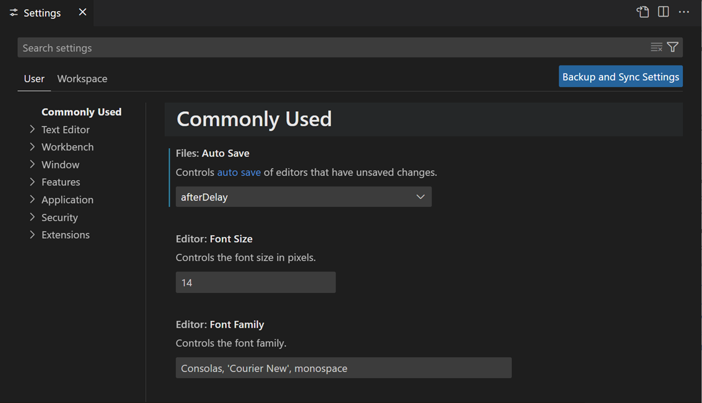
[!NOTE]
工作区设置会覆盖用户设置，对于跨团队共享项目特定的设置非常有用。
禅模式
禅模式让你通过隐藏除编辑器之外的所有 UI 元素来专注于代码，将 VS Code 切换为全屏，并使编辑器居中。可以通过视图 > 外观 > 禅模式菜单、命令面板中的视图：切换禅模式或快捷键 kb(workbench.action.toggleZenMode) 来切换禅模式。双击 kbstyle(Esc) 退出禅模式。可以通过 setting(zenMode.fullScreen) 禁用切换到全屏。
禅模式可以通过以下设置进一步调整：
setting(zenMode.hideActivityBar)- 隐藏活动栏。默认true。setting(zenMode.hideStatusBar)- 隐藏状态栏。默认true。setting(zenMode.hideLineNumbers)- 隐藏行号。默认true。setting(zenMode.showTabs)- 控制是否显示多个、单个或不显示编辑器标签页。默认multiple。setting(zenMode.fullScreen)- 将工作台置于全屏显示。默认true。setting(zenMode.restore)- 重新启动时还原禅模式。默认true。setting(zenMode.centerLayout)- 使用居中编辑器布局。默认true。setting(zenMode.silentNotifications)- 不显示通知。默认true。使用请勿打扰模式减少通知
如果你被弹出的通知困扰，有一种方法可以减少通知，无论是针对所有通知，还是针对特定扩展的通知。
选择状态栏中的铃铛图标（或者如果通知位于右上角，则在标题栏中）打开通知区域。这是一个你可以随时访问所有通知的地方，即使你启用了请勿打扰模式。你可以通过 setting(workbench.notifications.position) 设置更改通知位置。了解有关通知位置的更多信息。
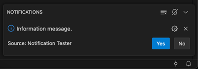
找到带叉的铃铛图标可以访问一个菜单，你可以在其中选择性地禁用扩展的通知，或启用全局请勿打扰模式以禁用所有通知。
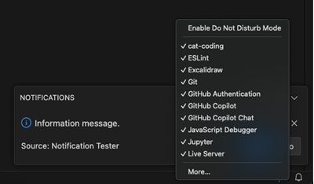
[!NOTE]
全局请勿打扰模式也会隐藏错误通知，而扩展特定筛选器仍允许显示错误通知。
居中编辑器布局
居中编辑器布局允许你居中对齐编辑器区域。当你在大型显示器上使用单个编辑器时，这非常有用。你可以使用侧边框来调整视图大小（按住 Alt 键可独立移动两侧）。
标签页
VS Code 在编辑器上方的标题区域中以标签页（选项卡标题）的形式显示打开的项目。当你打开一个文件时，会为该文件添加一个新标签页。标签页让你可以快速在项目之间导航。
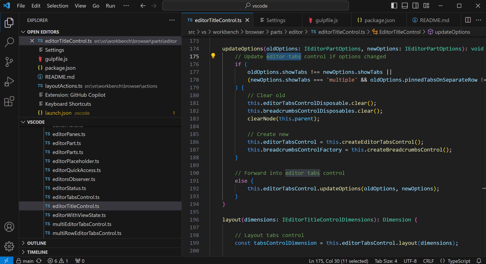
你可以拖放标签页来重新排序。要一次对多个标签页执行操作，请按住 kbstyle(Ctrl) 键（macOS 上为 kbstyle(Cmd)）并选择要操作的标签页。要选择一系列标签页，请按住 kbstyle(Shift) 键并选择范围中的第一个和最后一个标签页。
当你打开的项目超过标题区域所能容纳的数量时，你可以使用资源管理器视图中的打开的编辑器部分（通过 ... 按钮访问）来显示选项卡项目的下拉列表。
标签页和编辑器区域之间还有一个滚动条，用于将编辑器拖入视图。你可以通过将 Workbench > Editor: Title Scrollbar Sizing (setting(workbench.editor.titleScrollbarSizing)) 设置为 large 来增加滚动条的高度，使其更容易拖动。使用 setting(workbench.editor.titleScrollbarVisibility) 设置来控制滚动条的可见性。
如果你不想使用标签页，可以通过将 setting(workbench.editor.showTabs) 设置设置为 single 来禁用此功能：
"workbench.editor.showTabs": "single"请参阅下面的部分以优化 VS Code 用于不使用标签页工作。
[!TIP]
在编辑器标题区域中双击可快速创建新标签页。
标签页排序
默认情况下，新标签页会添加到现有标签页的右侧。你可以使用 setting(workbench.editor.openPositioning) 设置来控制新标签页出现的位置。
例如，你可能希望新的选项卡项目显示在左侧：
"workbench.editor.openPositioning": "left"你可以通过拖放来重新排序标签页。
如果你希望某个编辑器标签页始终可见，可以将其固定到编辑器标签栏上。在自定义布局文章中了解有关固定标签页的更多信息。
setting(workbench.editor.showTabIndex) 设置使你可以显示每个标签页在标签页标题中的索引。这样可以轻松查看与 kbstyle(Ctrl)（macOS 上为 kbstyle(Cmd)）+ 数字键盘快捷方式配合使用的数字，以快速切换到特定标签页。
预览模式
当你单击或选择资源管理器视图中的文件时，它会以预览模式显示并重用现有标签页（预览标签页）。如果你正在快速浏览文件，且不希望每个访问的文件都有自己的标签页，这将非常有用。当你开始编辑文件或使用双击从资源管理器打开文件时，会为该文件创建一个新的专用标签页。
预览模式由标签页标题中的斜体表示：
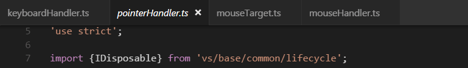
如果你不想使用预览模式并始终创建新标签页，可以通过以下设置控制此行为：
setting(workbench.editor.enablePreview)- 全局启用或禁用预览编辑器setting(workbench.editor.enablePreviewFromQuickOpen)- 启用或禁用在从快速打开打开时的预览编辑器换行标签页
要查看更多编辑器标签页，可以使用换行标签页布局，在该布局中，编辑器标签页换行以填充编辑器区域上方的多行。通过 Workbench > Editor: Wrap Tabs (setting(workbench.editor.wrapTabs)) 设置启用换行标签页。
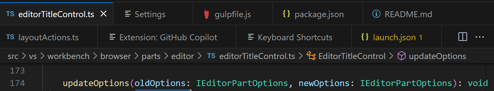
自定义标签页标签
当同时打开多个同名文件时，很难区分不同的标签页。为了解决这个问题，你可以为标签页应用自定义显示标签。你可以选择为工作区中的哪些文件应用自定义标签页标签。
要启用标签页的自定义显示标签，请设置 setting(workbench.editor.customLabels.enabled) 设置：
"workbench.editor.customLabels.enabled": true你可以使用 setting(workbench.editor.customLabels.patterns) 设置为标签页显示标签指定一个或多个命名模式。命名模式由两个部分组成：
- 项目 - 一个用于匹配文件路径的 glob 模式，对其应用自定义标签。例如，
/static//*.html。 - 值 - 自定义标签的模板。模板可以使用变量，例如
${filename}、${extname}、${extname(N)}、${dirname}和${dirname(N)}，这些变量会动态替换为文件路径中的值。
以下示例显示 /src/orders/index.html 文件的标签页标签为 orders/index：
"workbench.editor.customLabels.patterns": {
"**/src/**/index.html": "${dirname}/${filename}"
}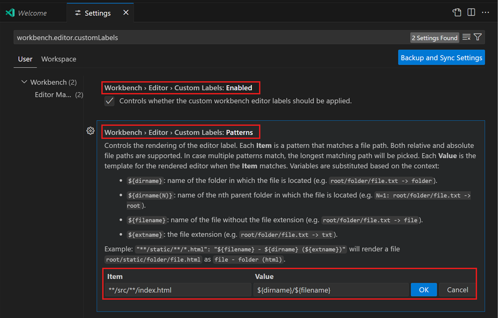
以下示例对文件 tests/editor.test.ts 使用了 ${extname} 变量：
${filename}=> editor${extname}=> test.ts${extname(0)}=> ts${extname(1)}=> test${extname(-1)}=> test${extname(-2)}=> ts[!NOTE]
自定义标签页标签也适用于"打开的编辑器"视图和快速打开 (
kb(workbench.action.quickOpen))。网格编辑器布局
默认情况下，编辑器组以垂直列布局。例如，当你拆分编辑器时，它会在旁边打开编辑器。你可以按任何你喜欢的布局（垂直和水平）排列编辑器组：
为了支持灵活的布局，你可以创建空的编辑器组。默认情况下，关闭编辑器组的最后一个编辑器也会关闭该组本身，但你可以通过将设置 workbench.editor.closeEmptyGroups 设为 false 来更改此行为：
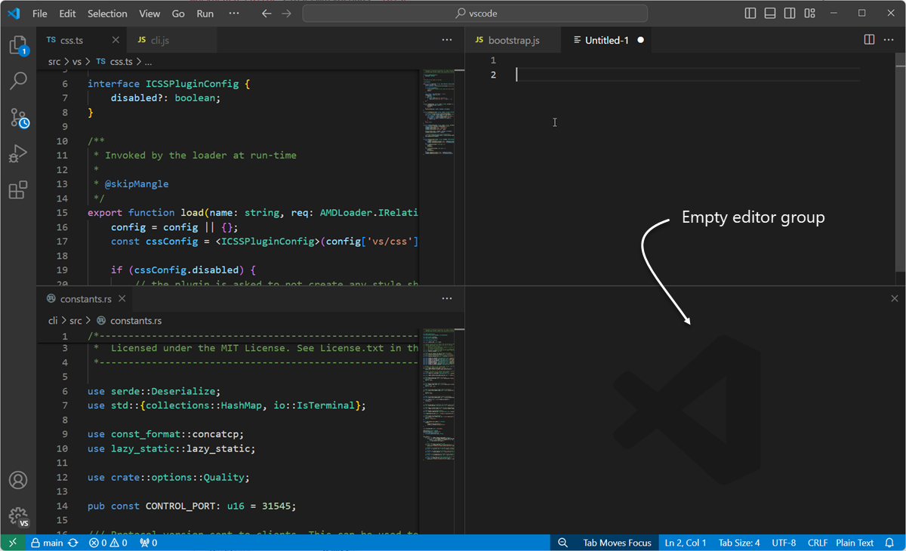
在视图 > 编辑器布局菜单中有一组预定义的编辑器布局：
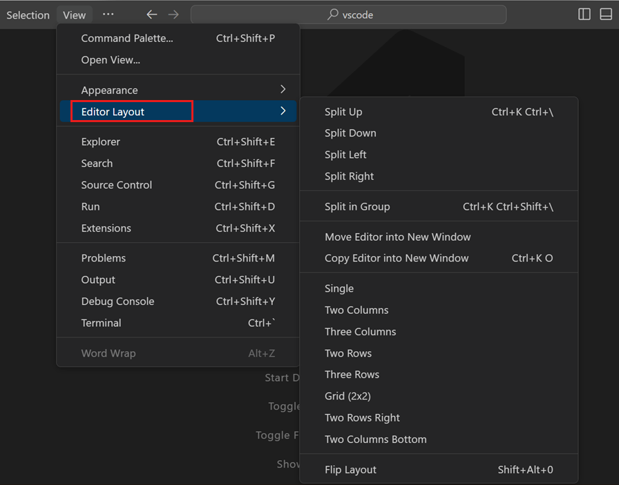
默认情况下，在侧边打开的编辑器（例如，通过选择编辑器工具栏的拆分编辑器操作）会在活动编辑器的右侧打开。如果你更希望编辑器在活动编辑器的下方打开，请将 setting(workbench.editor.openSideBySideDirection) 设置为 down。
有许多用于通过键盘调整编辑器布局的键盘命令。如果你更习惯使用鼠标，可以使用拖放将编辑器拆分为任意方向：
[!TIP]
如果你在悬停于拆分编辑器的工具栏操作上时按住 kbstyle(Alt) 键，它会提供拆分到另一个方向的选项。这是快速拆分到右侧或底部的方法。
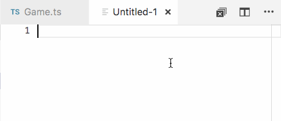
键盘快捷方式
以下是一些方便的键盘快捷方式，用于在编辑器和编辑器组之间快速导航。
kb(workbench.action.nextEditor)- 转到右侧编辑器。kb(workbench.action.previousEditor)- 转到左侧编辑器。kb(workbench.action.quickOpenPreviousRecentlyUsedEditorInGroup)- 在编辑器组的最近使用列表中打开上一个编辑器。kb(workbench.action.focusFirstEditorGroup)- 转到最左侧的编辑器组。kb(workbench.action.focusSecondEditorGroup)- 转到中间的编辑器组。kb(workbench.action.focusThirdEditorGroup)- 转到最右侧的编辑器组。kb(workbench.action.closeActiveEditor)- 关闭活动编辑器。kb(workbench.action.closeEditorsInGroup)- 关闭编辑器组中的所有编辑器。kb(workbench.action.closeAllEditors)- 关闭所有编辑器。
>如果你想修改默认的键盘快捷方式，请参阅键绑定了解详细信息。
不使用标签页工作
如果你不想使用标签页（选项卡标题），可以通过将 setting(workbench.editor.showTabs) 设置为 single 或 none 来完全禁用标签页。
禁用预览模式
没有标签页时，资源管理器视图中的打开的编辑器部分是进行文件导航的快捷方式。但是，启用预览编辑器模式后，文件不会添加到"打开的编辑器"部分。你可以通过 setting(workbench.editor.enablePreview) 和 setting(workbench.editor.enablePreviewFromQuickOpen) 设置禁用此功能。
使用键盘快捷方式导航编辑器历史记录
你可以更改 kbstyle(Ctrl+Tab) 的行为，使其显示历史记录中所有已打开编辑器的列表，而不依赖于活动编辑器组。
编辑你的键盘快捷方式并添加以下内容：
{ "key": "ctrl+tab", "command": "workbench.action.openPreviousEditorFromHistory" },
{ "key": "ctrl+tab", "command": "workbench.action.quickOpenNavigateNext", "when": "inQuickOpen" },关闭整个组而不是单个编辑器
如果你喜欢 VS Code 在关闭一个编辑器时关闭整个组的行为，可以在键绑定中绑定以下内容。
macOS：
{ "key": "cmd+w", "command": "workbench.action.closeEditorsInGroup" }Windows/Linux：
{ "key": "ctrl+w", "command": "workbench.action.closeEditorsInGroup" }窗口管理
VS Code 提供了各种选项来控制如何在会话之间打开或还原 VS Code 窗口（实例）。
提供了 setting(window.openFoldersInNewWindow) 和 setting(window.openFilesInNewWindow) 设置来配置文件或文件夹是打开新窗口还是重用最后的活动窗口，可能的值为 default、on 和 off。
如果配置为 default，VS Code 会根据打开请求的来源来决定是重用还是打开新窗口。将其设置为 on 或 off 以始终保持相同的行为。例如，如果你觉得从文件菜单中选择文件或文件夹应始终在新窗口中打开，请将此设置为 on。
[!NOTE]
在某些情况下会忽略此设置，例如当你使用-new-window或-reuse-window命令行选项时。
setting(window.restoreWindows) 设置告知 VS Code 如何还原上一会话中打开的窗口。默认情况下，VS Code 会还原上一会话中工作的所有窗口（设置：all）。将此设置更改为 none 以永远不重新打开任何窗口，并始终以一个空的 VS Code 实例开始。将其更改为 one 以仅重新打开上一个工作的窗口，或更改为 folders 以仅还原已打开文件夹的窗口。
后续步骤
现在你已经了解了 VS Code 的整体布局，可以开始自定义编辑器以适应你的工作方式，请查看以下文章：
缩进参考线颜色是可自定义的，就像大多数 VS Code 用户界面元素一样。要为你活动的颜色主题自定义缩进参考线颜色，请使用 setting(workbench.colorCustomizations) 设置并修改 editorIndentGuide.background 值。
例如，要使缩进参考线变为亮蓝色，请在 settings.json 中添加以下内容：
"workbench.colorCustomizations": {
"editorIndentGuide.background": "#0000ff"
}我可以隐藏资源管理器视图中的"打开的编辑器"部分吗？
可以，你可以通过使用资源管理器中的"视图"菜单并切换打开的编辑器菜单项来显示或隐藏"打开的编辑器"部分。
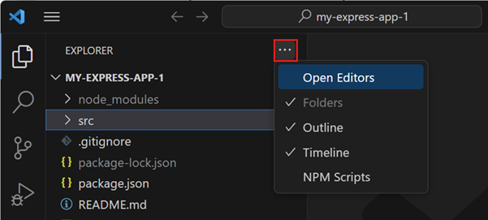